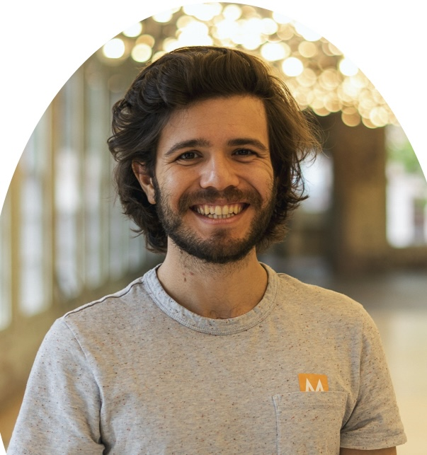
Assistant Professor, Director
Ethan Gotlieb Wilcox is an Assistant Professor of Computational Linguistics and the director of PICoL. He is interested in how we learn language from limited inputs and how we process it in real-time.
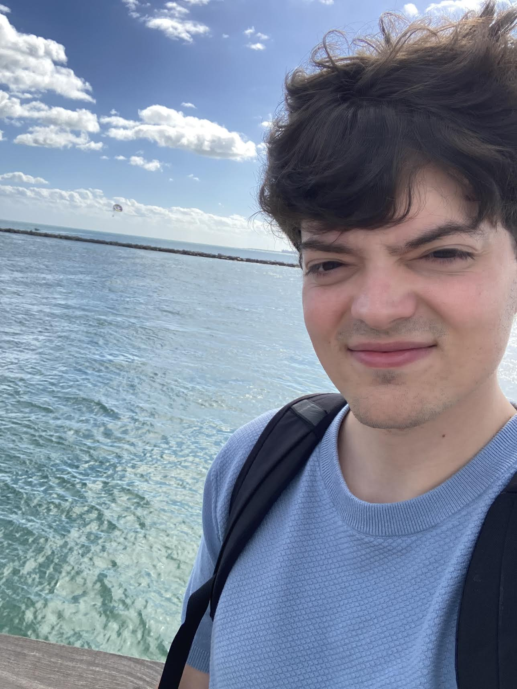
PhD Student
Wesley Scivetti is a 5th year Ph.D. candidate in Computational Linguistics. His research centers on language acquisition, mechanistic interpretability, and construction grammar.
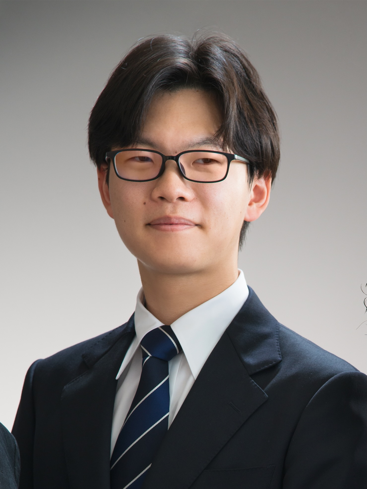
PhD Student
Kohei is a 2nd year PhD student. He investigates human sentence processing through the lens of information theory and syntactic structures.
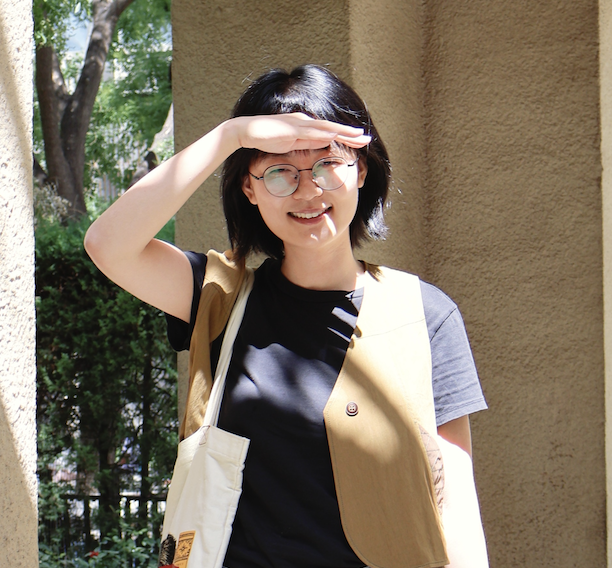
PhD Student
Xiulin Yang is a 4th year PhD student. Her research interests include language modeling, language universals, (compositional) generalization of neural networks, LLMs, and semantics.
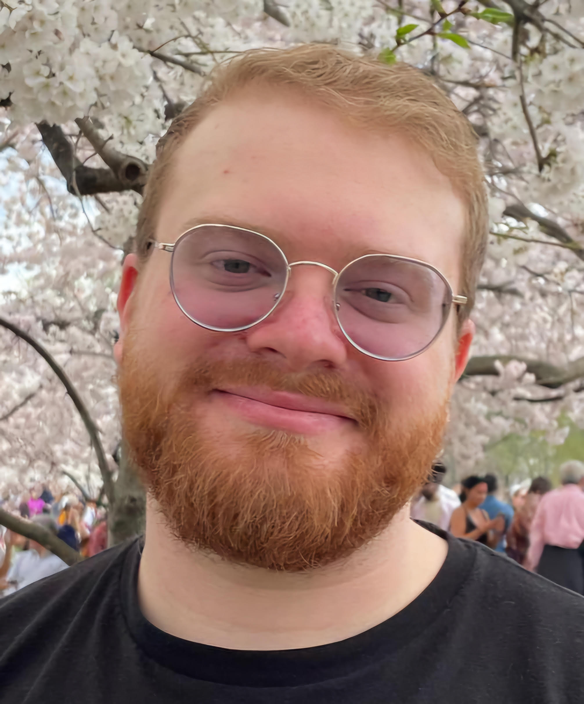
PhD Student
Dan DeGenaro is a 2nd year PhD student in the CS department. He is interested in low-resource machine translation and speech recognition, multilingual NLP, and information-theoretic approaches to language modeling and linguistics
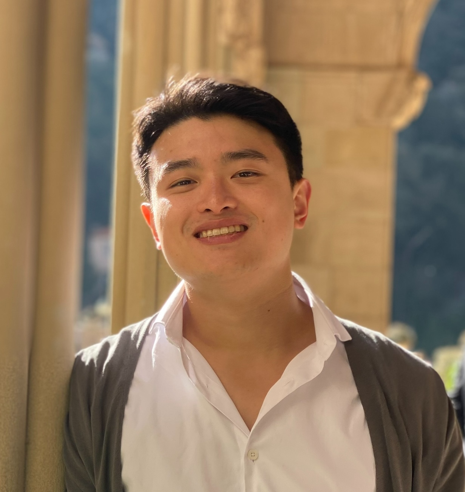
PhD Student
Hyun is a 3rd year PhD student in the computational concentration from Busan, Korea. He is interested in robust representations of structure in language and how humans and statistical learners predict structure and resolve ambiguities.
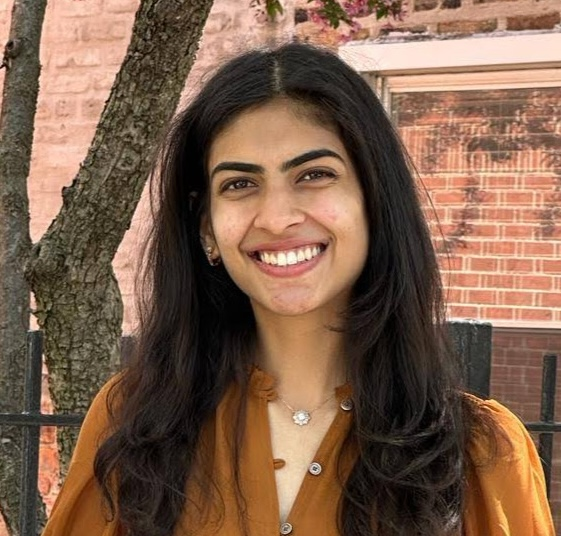
PhD Student
Devika Tiwari is a 4th year PhD student in Computational Linguistics and Cognitive Science. She is interested in how we can use computational tools to understand how language is processed in the mind and brain. She is also working on topics in neurolinguistics and figurative language processing.
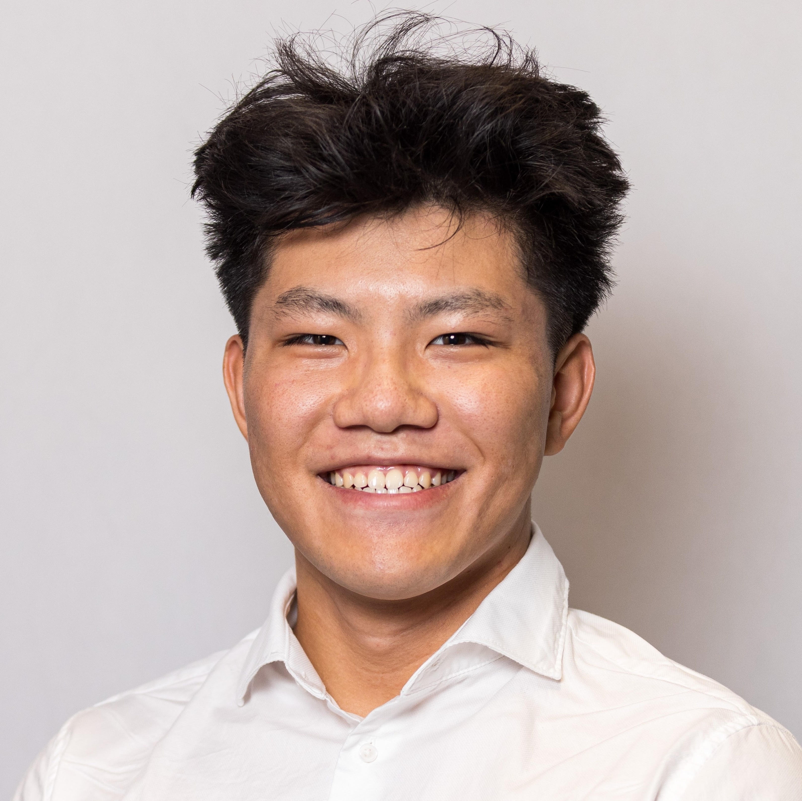
PhD Student
Wenjie Hua is a first-year PhD student in computational linguistics. He is interested in cognitive linguistics, information theory, and low-resource NLP.
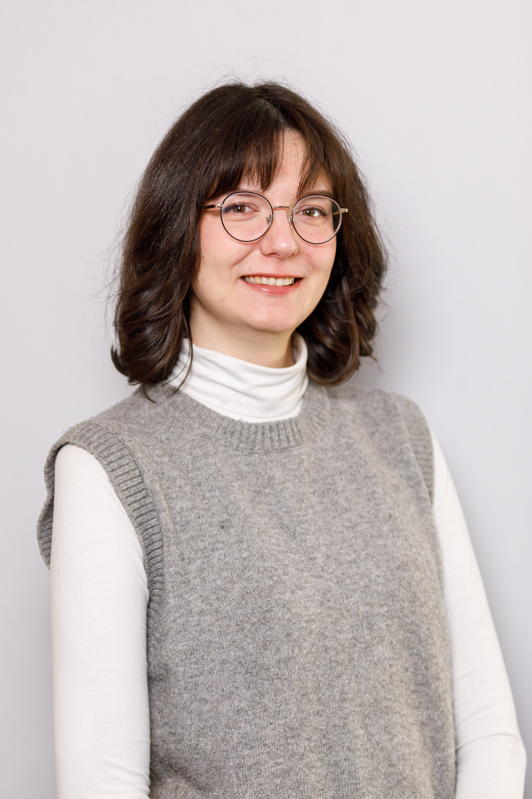
PhD Student
Nina is a 3rd year PhD candidate in Applied Linguistics, minoring in Computational Linguistics. She is interested in psycholinguistic experimental research on human second language (L2) processing and the use of language modelling in applied linguistics research.
Master's Student
Lin is a 2nd year Master's student.
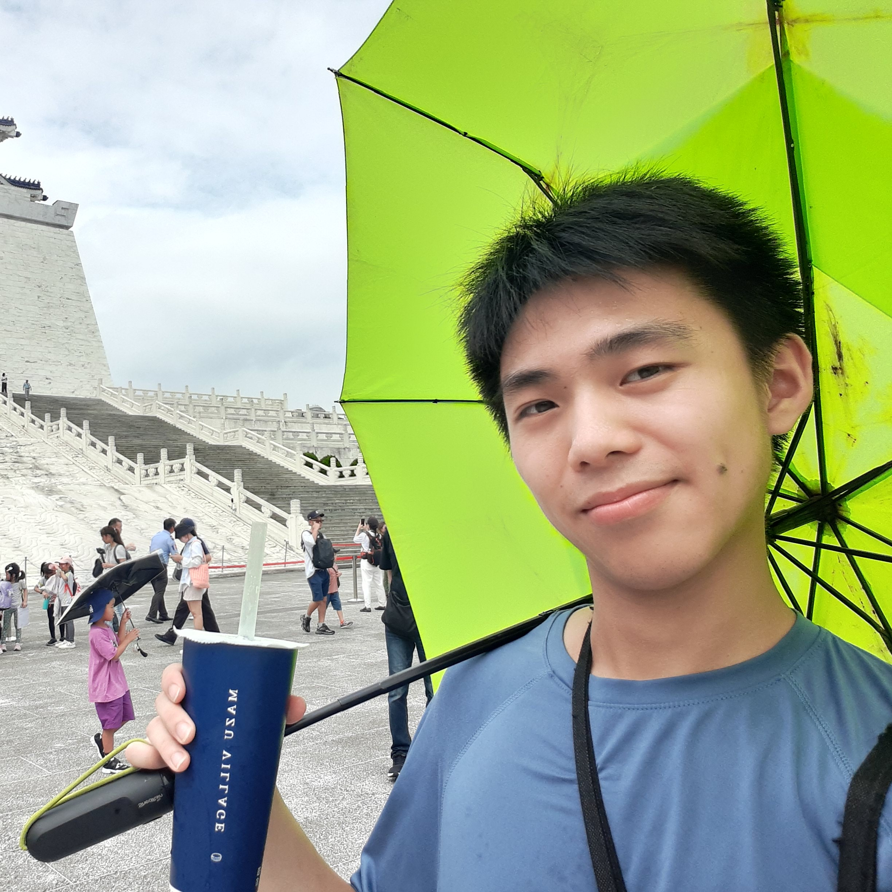
Master's Student
Alan is a 1st year Master’s student in Computational Linguistics. He is interested in using computational models to describe cognitive sentence processing.
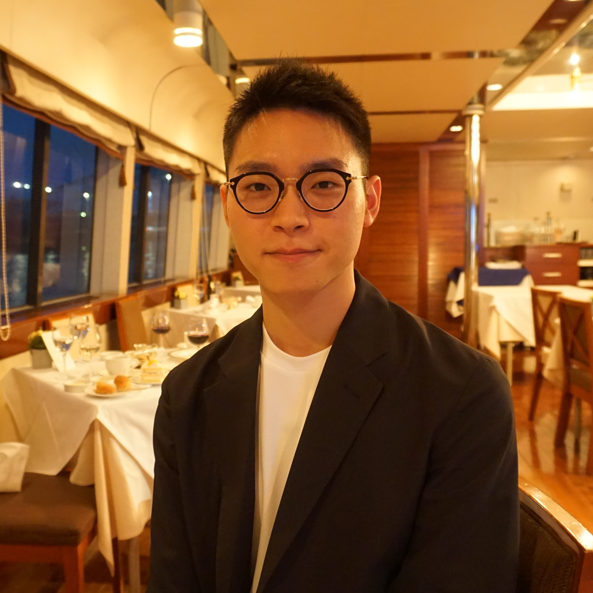
PhD Student
Tatsuya completed his PhD in 2025. He is currently a research scientist at Meta AI.
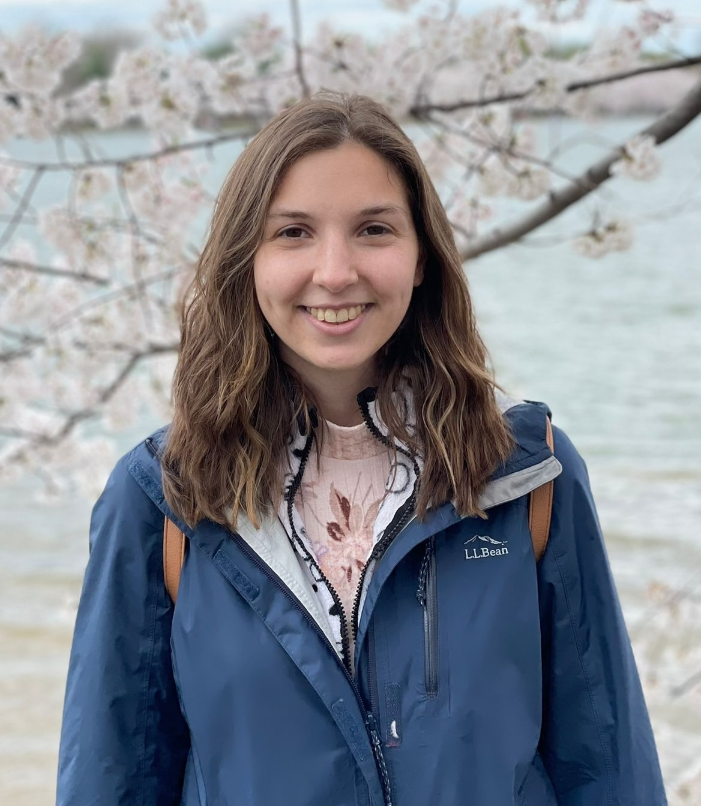
PhD Student
Lauren Levine completed her PhD in 2026. Her work focuses on linguistic annotation/resource creation, modeling for the task for bridging resolution, and investigating bridging with relation to LLMs and natural language reasoning.
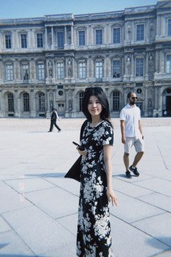
Master's Student
Lanni is currently a PhD student at The Ohio State University, working with WIlliam Schuler